Likelihood!
NRES 746
Fall 2025
To follow along with the R-based demo in class, click here for the companion R-script.
The previous lecture topic was about simulating data from fully specified models. This is often called forward simulation modeling. The workflow goes something like this:
\(Model \rightarrow Predicted \space Data\)
In this lecture, we will talk about inference about parameters using the method known as maximum likelihood.
Conceptually, inference is in some ways the inverse of the data generating process; we are treating the data as fixed (known) and using it to say something about the model that generated it.
\(Real \space Data \rightarrow Model\)
It’s often useful to think both ways: forward simulation can help us to make better inferences from real data (e.g., goodness of fit tests, approximate likelihood), and inference from real data can help us to make better predictions!
In fact, in a brute force sense, we can use data simulation to make inferences about parameters and models:
Using data simulation to make inferences
We will use the built-in “mtcars” data for this example:
# Demo: using data simulation to make inferences ----------------
data(mtcars) # use the 'mtcars' data set as an example
# ?mtcars
plot(mpg~disp, data = mtcars, las = 1, pch = 16, xlab = "Displacement (cu. in.)", ylab = "Miles/Gallon") # visualize the relationship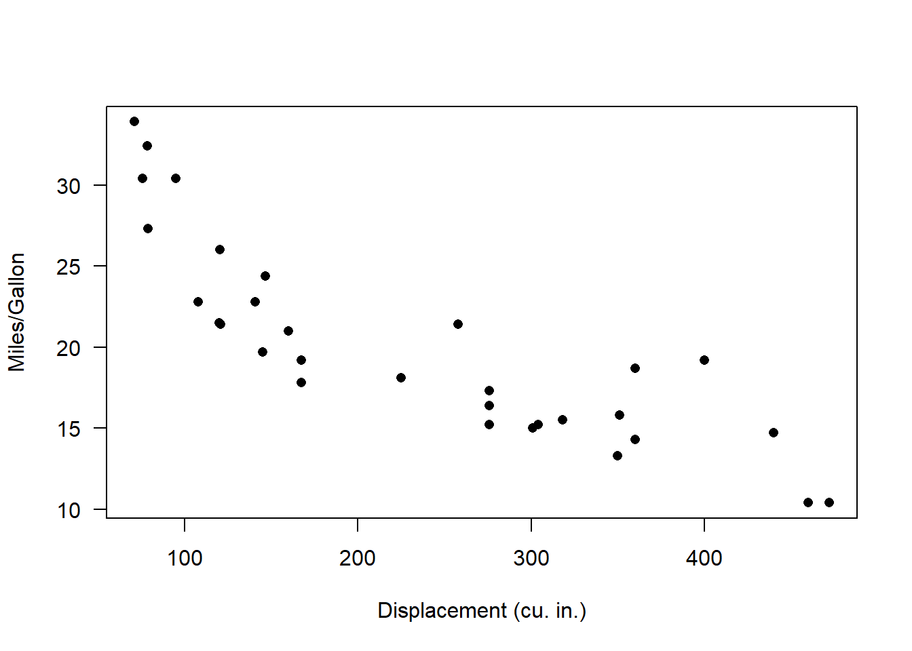
Looks nonlinear, with relatively constant variance across parameter space. So let’s see if we can build a plausible data-generating model for these data!!
Visually, this looks a bit like an exponential decline process with normally distributed residual error:
\(mpg_i \sim Normal\left \{ \alpha\cdot e^{\beta \cdot displacement_i} ,sigma\right \}\)
What’s the deterministic component here?
Take a minute to visualize the negative exponential functional relationship - e.g., using the “curve()” function in R.
# try an exponential model
mu_func <- function(x,a,b){
a*exp(b*x) # deterministic exponential decline (assuming b is negative)
}
DataGenerator <- function(x,params){
a=params[1]; b=params[2]; sigma=params[3]
rnorm(length(x),mu_func(x,a,b),sigma)
}Let’s test this function to see if it does what we want:
## generate data under an assumed process model -----------------
xvals=mtcars$disp # xvals same as data (there is no random component here- we can't really "sample" x values)
params <- c(
a = 30, # set model parameters arbitrarily (eyeballing to the data) (see Bolker book)
b = -0.005, # = 1/200
sigma=2
)
yvals <- DataGenerator(xvals,params)
plot(yvals~xvals,las = 1, pch = 16, xlab = "Displacement (cu. in.)", ylab = "Miles/Gallon") # plot the simulated data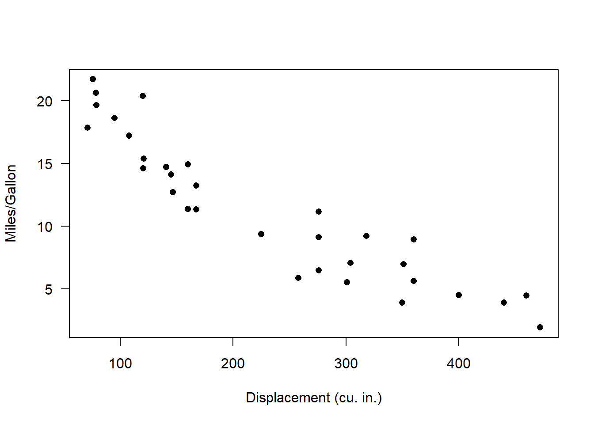
Okay, looks reasonable. Now, we can visualize the range of plausible data produced by the model- and we can overlay the observed data for comparison:
## assess goodness-of-fit of a known data-generating model --------------------
VisualizeModelWithData <- function(x,params){
lots=1000
plotdat = data.frame(xseq=round(seq(min(x),max(x),length=25)))
results = replicate(lots,DataGenerator(plotdat$xseq,params))
# now make a boxplot of the results
bounds=sapply(1:nrow(results), function(t) c(lb=quantile(results[t,],0.025,names=F), ub=quantile(results[t,],0.975,names=F), mean=mean(results[t,])) )
plotdat = cbind(plotdat,t(bounds))
plot = ggplot(plotdat,aes(x=xseq,y=mean)) +
geom_ribbon(aes(ymin=lb,ymax=ub),fill="gray") +
geom_path(lwd=2) +
geom_point(data=mtcars,aes(x=disp,y=mpg),col="darkgreen") +
labs(x="Displacement",y="mpg",title ="Plausible data under this model" ) +
theme_classic()
print(plot)
}Let’s try it out!
VisualizeModelWithData(xvals,params) # run the function to visualize the range of data that could be produced under this model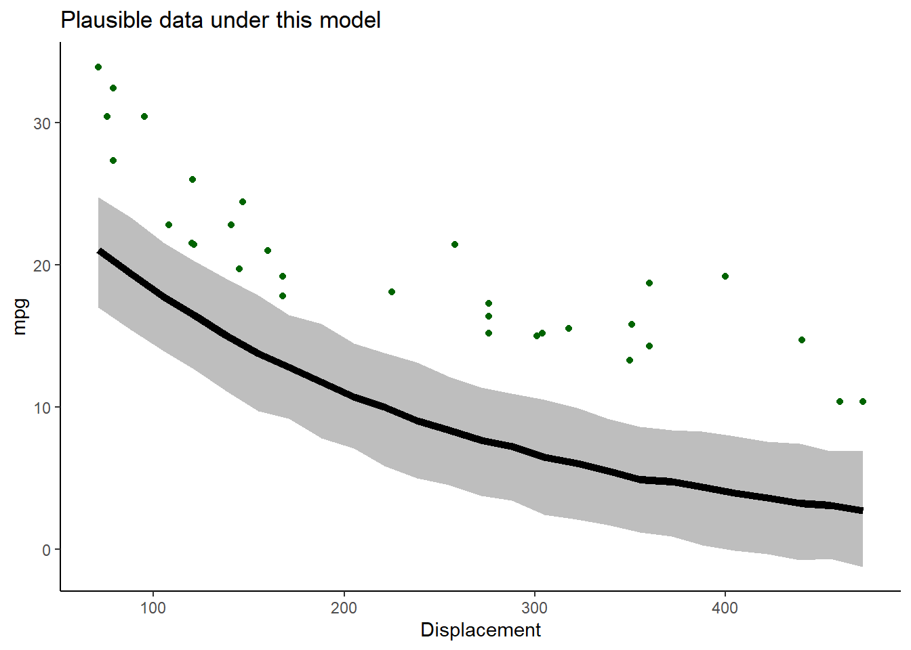
Okay, not perfect. Let’s see if we can improve the fit by changing the parameters. Try increasing the intercept
# now change the parameters and see if the data fit to the model
params["a"]=45 # was 30
params["b"]=-0.005
VisualizeModelWithData(xvals,params) 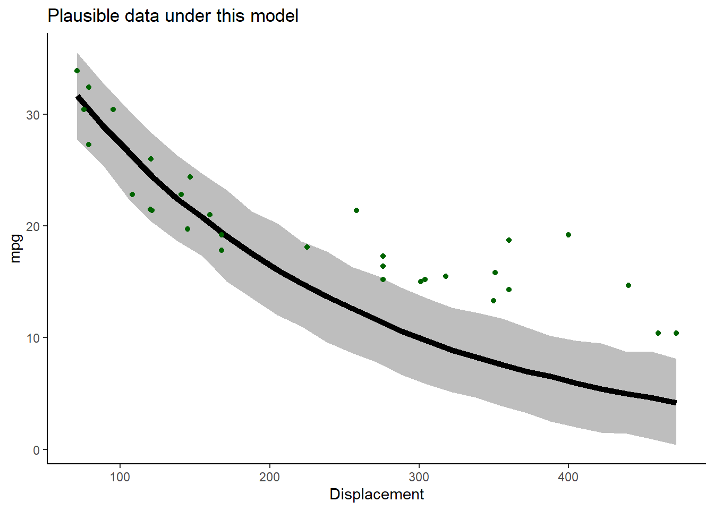
Better, but not great… Let’s try flattening the slope and increasing the stdev.
# try again- select a new set of parameters
params["b"]=-0.002 # was -0.005
params["sigma"]=3 # was 2
VisualizeModelWithData(xvals,params) 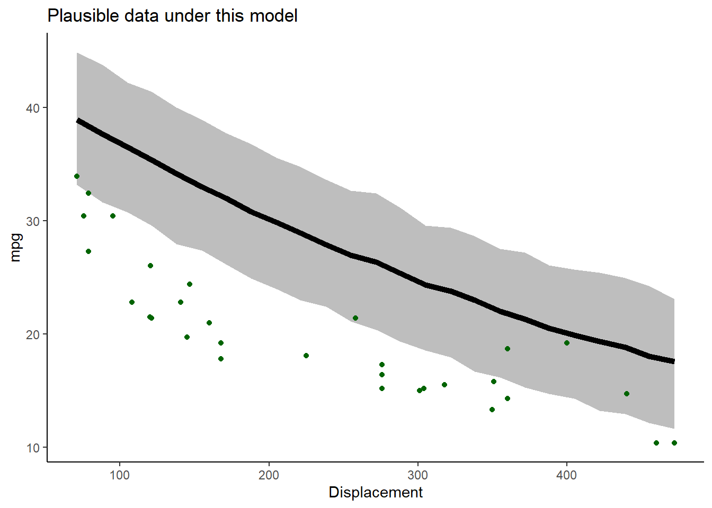
Okay well that’s worse…Keep trying. See if you can find a model that could plausibly generate most of these data!
Q: Why did you NOT just increase the “noise” parameter until the data were consistent with the model?
So, we have used simulation, along with trial and error, to infer the most likely parameter values for our model!
A likelihood function, very generally, is a function that has 2 input arguments: + the data, which we assume is fixed and known with certainty + the parameters for an hypothesized data generating model
The likelihood function takes these inputs and produces a single output: + the likelihood (probability of the data under the data generating model with the specified parameters)
The likelihood is a single number representing the plausibility of the data under this model.
The higher the relative plausibility of generating the data, the higher the value the likelihood function returns.
Q: What is the likelihood function we have used in this example?
Computing data likelihood more rigorously
First of all, what does “data likelihood” really mean, in a formal sense?
\(\mathcal{L_{model}} (data) \equiv Prob(data|Model)\)
Definition, in English!
The likelihood value of a model with parameters \(\theta\) is equal to the probability of observing the data under the defined model with these specific parameter values.
Higher likelihoods correspond to a higher probability of the model producing the observed data (the data “fit” the model).
In statistics, we often try to identify the parameter values that maximize the likelihood function across all possible parameter values.
But notice that this approach treats likelihood as a relative rather than an absolute metric. Therefore, the model with the highest likelihood is not necessarily a “good” fit to the data! It just does a better job than anything else we have tried…
Worked example
Sticking with the cars example for now…
For simplicity, let’s consider only the first observation:
# Work with likelihood! ---------------------
obs.data <- mtcars[1,c("mpg","disp")] # for simplicity, consider only the first observation
obs.data## mpg disp
## Mazda RX4 21 160Remember, we are considering the following data generating model:
\(mpg_i \sim Normal\left \{ \alpha\cdot e^{\beta \cdot displacement_i} ,sigma\right \}\)
To compute likelihood we need to specify all parameter values. That is, we need a fully specified data generating model.
Let’s use the parameters we selected in our trial-and-error exercise above. What is the expected value of our single observation under this data generating model.
## "best fit" parameters from above ----------------
params["a"]=35 # fill the list with the "best fit" parameter set from above (this is still just an educated guess)
params["b"]= -0.0029
params["sigma"]=0.95
expected_val <- mu_func(obs.data$disp,params["a"],params["b"])
expected_val # expected mpg for the first observation in the "mtcars" dataset## a
## 22.00672Okay we now know the mean mpg for a car with displacement of 160 cubic inches under this model. We also know the observed mpg for a car with this displacement: it was 21 mpgs.
Since we also know the residual error distribution, we have a fully specified data generating model.
We can compute the probability of obtaining the observed data (mpg= 21) for a car with cubic displacement of 160 cubic inches:
\[L(\theta) = P(y=21;\theta=\theta^*)\] \[y_i \sim Normal\left \{ \alpha\cdot e^{\beta \cdot x_i} ,sigma\right \}\] \[L(\{\alpha,\beta,\sigma \}) = f_{normal} (y_i,\sigma) = \frac{1}{\sigma \sqrt{2\pi}}exp(\frac{-(y_i-\alpha\cdot e^{\beta \cdot x_i})^2}{2\sigma^2}\]
Note that here we are treating a probability density as a probability (likelihood). Technically we would need to multiply this density by some distance/area/volume (e.g., \(\Delta v\)). But since we only care about relative likelihoods this doesn’t change anything about our calculations.
Recall that when we are trying to calculate the probability density of any particular number out of a known probability distribution in R, we can use the “dx” version of the probability distribution function (e.g., “dnorm()”, “dunif()”, “dpois()”):
## Visualize the likelihood of this single observation. ------------------------
mu_star = expected_val # expected (mean) value for this observation, given the data generating model
sigma_star = params['sigma'] # standard deviation
curve(dnorm(x,mu_star,sigma_star),10,30,xlab="Response outcome under the specified model",ylab="probability density") # probability of all plausible mpg values under the data generating model.
abline(v=obs.data$mpg,col="red",lwd=2) # overlay the observed data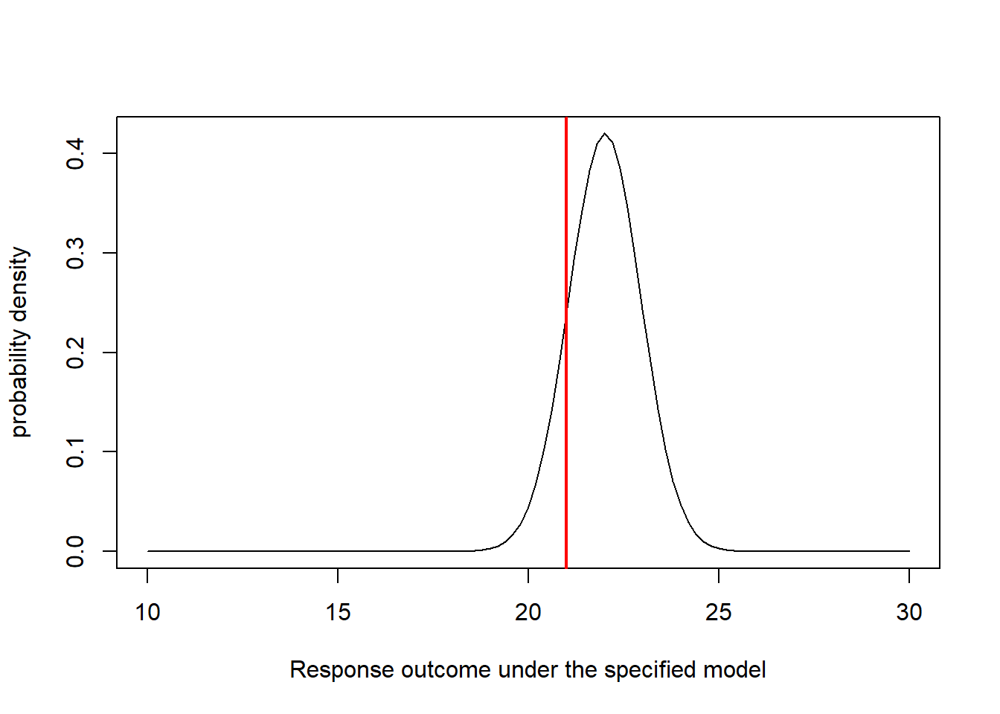
Now it is straightforward to compute the likelihood. We just need to know the height of the graph where the red line (observed data) intersects with the normal density curve (above). For this we can use the “dnorm()” function (probability density, normal distribution):
## compute the likelihood of the first observation ---------------------
likelihood1 = dnorm(obs.data$mpg,mu_star,sigma_star)
likelihood1## [1] 0.2395153Q: how could you increase the likelihood of obtaining the observed observation??
Now let’s consider a second observation as well!
## Visualize the likelihood of two observations. ---------------
obs.data <- mtcars[c(1,3),c("mpg","disp")]
obs.data## mpg disp
## Mazda RX4 21.0 160
## Datsun 710 22.8 108par(mfrow=c(1,2)) # set up graphics!
for(i in 1:nrow(obs.data)){
curve(dnorm(x,mu_func(obs.data$disp[i],params['a'],params['b']),params['sigma']),10,30,xlab="mpg",ylab="probability density") # probability density
abline(v=obs.data$mpg[i],col="red",lwd=2)
}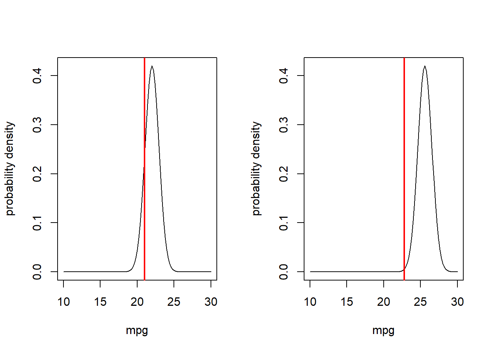
What is the likelihood of observing both of these data points???
\(P(data_{1}|Model]) \times Prob(data_{2}|Model])\)
## compute the likelihood of observing BOTH data points ----------------
Likelihood <- dnorm(obs.data$mpg[1],mu_func(obs.data$disp[1],params['a'],params['b']),params['sigma']) *
dnorm(obs.data$mpg[2],mu_func(obs.data$disp[2],params['a'],params['b']),params['sigma'])
Likelihood## [1] 0.001353494Or, we can use the ‘prod()’ function to compute the product of the two probabilities
prod(dnorm(obs.data$mpg,mu_func(obs.data$disp,params['a'],params['b']),params['sigma']))## [1] 0.001353494Let’s consider four observations:
# and now... four observations!
obs.data <- mtcars[c(1,3,4,5),c("mpg","disp")]
obs.data## mpg disp
## Mazda RX4 21.0 160
## Datsun 710 22.8 108
## Hornet 4 Drive 21.4 258
## Hornet Sportabout 18.7 360par(mfrow=c(2,2)) # set up graphics!
for(i in 1:nrow(obs.data)){
curve(dnorm(x,mu_func(obs.data$disp[i],params['a'],params['b']),params['sigma']),10,30,xlab="mpg",ylab="probability density") # probability density
abline(v=obs.data$mpg[i],col="red",lwd=2)
}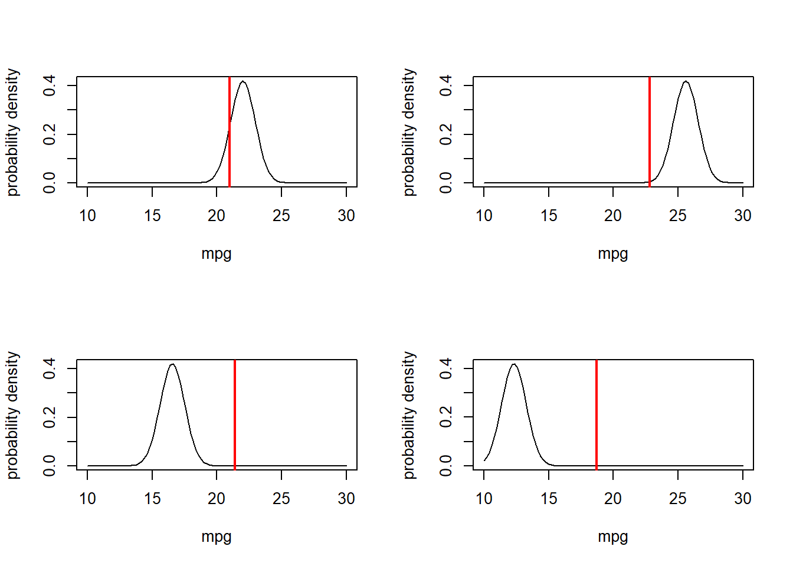
What is the combined likelihood of all of these four data points, assuming each observation is independent…
# compute the likelihood of observing all four data points
prod(dnorm(obs.data$mpg,mu_func(obs.data$disp,params['a'],params['b']),params['sigma']))## [1] 9.089222e-20Okay, so it should be fairly obvious how we might get the likelihood of the entire dataset. Assuming independence of observations of course!
# Finally, compute the likelihood of ALL data points in the entire data set, using the "prod()" function
full.data <- mtcars[,c("mpg","disp")]
prod(dnorm(full.data$mpg,mu_func(full.data$disp,params['a'],params['b']),params['sigma']))## [1] 1.034314e-88You may notice that that’s a pretty small number. When you multiply lots of really small numbers together, we get much smaller numbers. This can be very undesirable, especially when you run into overflow/underflow errors (meaning the number is beyond the range that can be represented in computer memory). For this reason, and because we generally like sums more than products, we generally log-transform likelihoods. As you recall,
\(log(a\cdot b\cdot c)=log(a)+log(b)+log(c)\)
The probability density functions in R make it extra easy for us to work with log likelihoods, using the ‘log=TRUE’ option!
## Compute the log-likelihood (easier to work with!) -----------------------
l <- sum(dnorm(full.data$mpg,mu_func(full.data$disp,params['a'],params['b']),params['sigma'],log=TRUE))
l## [1] -202.5937exp(l) # we can convert back to likelihood if we want...## [1] 1.034314e-88Maximum Likelihood Estimation (MLE)
Maximum likelihood estimation is a general, flexible, reliable method for drawing inference about models from data (with very nice theoretical justifications and mathematical properties!).
The basic idea is simple: given a data generating model and a set of free parameters, search through parameter space for the set of parameter values (specific values for each of the free parameters) that maximizes the likelihood of the observed data (the value returned by the likelihood function)!
\[\underset{\theta}{\operatorname{argmax}} f(\theta;data)\]
Every likelihood function has the following inputs and outputs:
The inputs are: + One or more free
parameters (often a vector of parameters \(\theta\)) which are the parameters we are
trying to estimate! + + An observed response vector + Covariates for
computing the expected response vector (can be multiple vectors, often
organized as a data frame or matrix)
+ [optional] Any additional fixed parameters
The output is:
+ The log-likelihood of the dataset, given the model (sum of the log
likelihoods of individual observations)
NOTE: instead of log-likelihood, we often use the negative log-likelihood (it is more common to identify the minimum rather than the maximum of an objective function. For example, the optimization function in base R, “optim()”, minimized the objective function by default.
Q: What are the free parameters in the mtcars example?
It is important to note that the likelihood function essentially contains all the information in the data that can be used to make inference about the model. This includes information on point estimates and the precision of the point estimates.
The steps of a typical MLE analysis are as follows:
- Construct a likelihood function
- Use numerical optimization algorithms to find the set of parameters that maximize the likelihood function (MLE)
- Use the shape of the likelihood function around the MLE to make inference about parameter uncertainty (e.g., confidence intervals)
Okay, let’s build our first likelihood function? We basically already have this for the cars example:
# Example likelihood function! --------------------------------
# Arguments:
# params: bundled vector of free parameters for the known data-generating model
# df: a data frame that holds the observed response variable and covariates
# yvar: the name of the response variable (ancillary)
# xvar: the name of the predictor variable (ancillary)
mtcars_LL <- function(params,df=mtcars,yvar="mpg",xvar="disp"){
sum(dnorm(df$mpg,mu_func(df$disp,params['a'],params['b']),params['sigma'],log=TRUE))
}
mtcars_LL(unlist(params),df=mtcars,yvar="mpg",xvar="disp")## [1] -202.5937Now that we have a likelihood function, we need to search parameter space for the parameter set that maximizes the log-likelihood of the observed data. Luckily, there are fast algorithms that can do this for us- for example, the algorithms implemented in the ‘optim()’ function in R.
The “optim()” function in R wants (1) a likelihood function, (2) a named vector of free parameters, along with their starting values (3) any other ancillary variables that the likelihood function requires, and (4) parameters specifying aspects of the optimization algorithm (e.g., which numerical algorithm to use, whether to maximize rather than minimize).
Often, we will ‘hard code’ the data into the likelihood function, since we treat the data as fixed/immutable.
Let’s find the MLE for the three parameters in the cars example!!
# Use numerical optimization methods to identify the maximum likelihood estimate (and the likelihood at the MLE)
optimizedLik <- optim(fn=mtcars_LL,par=params,control=list(fnscale=-1),hessian = T) # note, the control param is set so that "optim" maximizes rather than minimizes the Log-likelihood. Now, we can get the MLEs for the three parameters (the parameter values that maximize the likelihood function):
MLE = optimizedLik$par # maximum likelihood parameter estimates
MLE## a b sigma
## 33.076121323 -0.002338403 2.857709801We can also get the log likelihood for the best model (the maximum log-likelihood value, achieved by using the above parameter values as inputs to the likelihood function)
LogLik = optimizedLik$value # log likelihood for the best model
LogLik## [1] -79.00891Let’s look at goodness-of-fit for the best model!
# visualize goodness-of-fit for the best model ----------------------
xvals <- mtcars$disp
yvals <- mtcars$mpg
VisualizeModelWithData(xvals,MLE)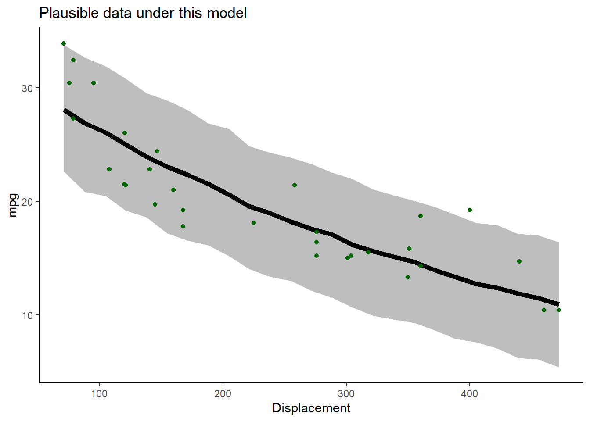
What do you think? Is this a good fit??
Using this same basic strategy, we can fit countless models to data!
We just performed a non-linear regression. But we could just as well have fit any number of alternative model formulations (different deterministic functions and “noise” distributions). Maximum Likelihood is a powerful and flexible framework.
We will have plenty of more opportunities to work with likelihood functions, both in a frequentist and a Bayesian context.
Aside: generating initial values
Note that the ‘optim’ function requires specification of initial values for every free parameter in your model. In general, it is not critical that the initial values fit the data very well. However, you should put serious thought into our initial values. Using values that are too far away from the best-fit parameter estimates can cause our optimization algorithms to fail- especially for more complex, non-linear problems! The strategy I recommend for setting initial values is:
- If possible, use general understanding of the meaning of the
parameters to idenfify an approximate value for each parameter
- Write a data-generation function and compare the data generated by this function against the observed data. If the fit is “close-ish” then you should be able to use these values for your initial values. If not, continue to tweak the parameters until you find something that is “close-ish”.
Estimating parameter uncertainty
We have now identified the parameter values that maximize the likelihood function. These are now our “best” estimates of the parameter values (MLE). But we usually want to know something about how certain we are about our estimate, often in the form of confidence intervals.
Fortunately, likelihood theory offers us a strategy for estimating confidence intervals around our parameter estimates. The idea is that the shape of the likelihood function around the MLE tells us something about the plausibility of these parameter values.
For instance, let’s plot out the shape of the likelihood function across a slice of parameter space (vary one parameter and hold all others constant). In this case, let’s look at the “decay rate” term (the ‘b’ parameter). We can vary that parameter over a range of possible values and see how the likelihood changes over that parameter space. Let’s hold the other parameters at their maximum likelihood values:
# Estimating parameter uncertainty -------------------------
# Visualize a "slice" of the likelihood function
allvals_b <- seq(-1/1000,-1/200,length=200)
paramslist <- lapply(allvals_b, function(t){MLE['b']=t;MLE } )
slice_b <- sapply(paramslist, function(t) exp(mtcars_LL(t)))
plot(allvals_b,slice_b,type="l",main="Likelihood Slice",xlab="Parameter Slice for \'b\'",ylab="Likelihood")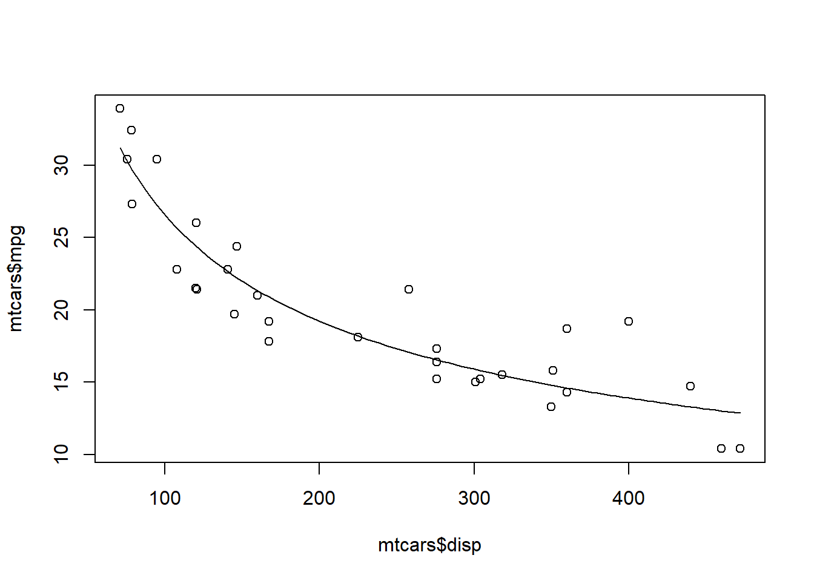
Again, we generally want to work with log-likelihoods.
And here we have an even better reason to use log-likelihoods. This reason: the “rule of 2”, and (more formally) the likelihood ratio test.
Rule of 2: for now, let’s treat all parameter values within ~2 log-likelihood units of the best-fit parameter value as plausible. Therefore, a reasonable confidence interval (approximately 95%) can be obtained by identifying the set of parameter values for which the log-likelihood of the data is within two of the maximum log-likelihood value…
Let’s plot out the log-likelihood slice:
# Work with log-likelihood instead...
slice_b <- sapply(paramslist, function(t) mtcars_LL(t)) #
plot(allvals_b,slice_b,type="l",main="Log Likelihood Slice",xlab="Parameter Slice for \'b\'",ylab="Log-Likelihood")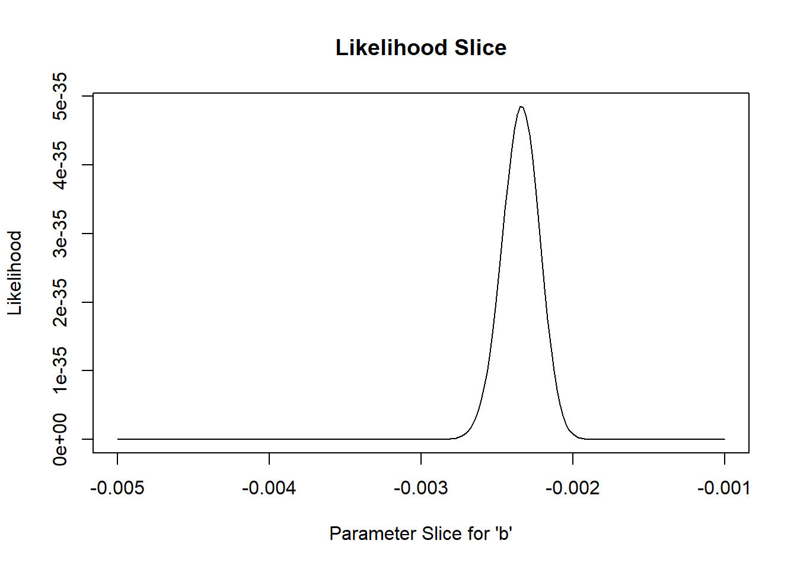
Let’s “zoom in” to a smaller slice of parameter space so we can more clearly see the “plausible” values:
# zoom in closer to the MLE
allvals_b <- seq(-1/550,-1/350,length=200)
paramslist <- lapply(allvals_b, function(t){MLE['b']=t;MLE } )
slice_b <- sapply(paramslist, function(t) mtcars_LL(t))
plot(allvals_b,slice_b,type="l",main="Log Likelihood Slice",xlab="Parameter Slice for \'b\'",ylab="Log-Likelihood")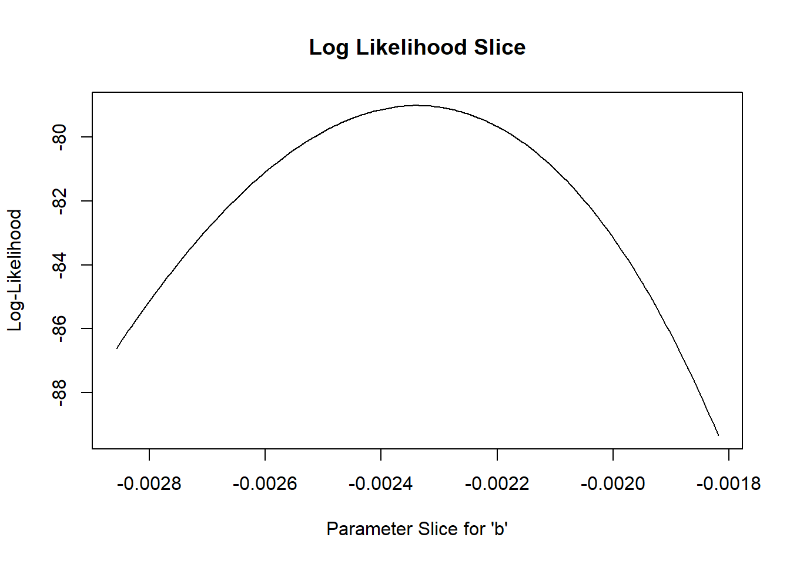
What region of this space falls within 2 log-likelihood units of the best value?
# what parameter values are within 2 log likelihood units of the best value? -------------
plot(allvals_b,slice_b,type="l",main="Log Likelihood Slice",xlab="Parameter Slice for \'b\'",ylab="Log-Likelihood")
abline(v=MLE['b'],lwd=3,col="blue")
abline(h=(LogLik-2))
So what is our 95% confidence interval in this case?? (remember this is approximate!)
# Generate an approximate 95% confidence interval for the "b" parameter -----------------
reasonable_b_slice <- allvals_b[slice_b>=(LogLik-2)]
reasonable_b_limits <- c(min(reasonable_b_slice),max(reasonable_b_slice))
plot(allvals_b,slice_b,type="l",main="Log Likelihood slice",xlab="Parameter Slice for \'b\'",ylab="Log-Likelihood")
abline(v=MLE['b'],lwd=3,col="blue")
abline(h=(LogLik-2))
abline(v=reasonable_b_limits,lwd=1,col="blue")
Key point!
From the Bolker book:
- The geometry of the likelihood surface – where it peaks and how the distribution falls off around the peak – contains essentially all the information you need to estimate parameters and confidence intervals.
Estimating parameter uncertainty in multiple dimensions
If we have more than one free parameter in our model, it seems strange to fix any parameter at a particular value, as we did in computing the “likelihood slice” above. It makes more sense to allow all the parameters to vary. For the purpose of visualization, let’s assume for now that we only have two free parameters in our model: ‘a’ and ‘b’. We will assume for now that the variance parameter is known for certain.
Let’s try to visualize the likelihood surface in two dimensions!
# A better confidence interval, using the likelihood "profile" -----------------
# first, visualize the likelihood surface in 2 dimensions
a <- seq(5,50,length=200)
b <- seq(-1/300,-1/800,length=200)
LLsurface <- expand.grid(a,b)
colnames(LLsurface) <- c("a","b")
paramslist <- lapply(1:nrow(LLsurface), function(t){MLE['a']=LLsurface$a[t];MLE['b']=LLsurface$b[t];MLE } )
LLsurface$LL <- sapply(paramslist, function(t) mtcars_LL(t))
summary(LLsurface)## a b LL
## Min. : 5.00 Min. :-0.003333 Min. :-720.61
## 1st Qu.:16.25 1st Qu.:-0.002812 1st Qu.:-346.88
## Median :27.50 Median :-0.002292 Median :-182.72
## Mean :27.50 Mean :-0.002292 Mean :-245.85
## 3rd Qu.:38.75 3rd Qu.:-0.001771 3rd Qu.:-106.87
## Max. :50.00 Max. :-0.001250 Max. : -79.01ggplot(LLsurface,mapping =aes(x=a,y=b,z=LL)) +
geom_raster(aes(fill=LL)) +
geom_contour(breaks=seq(-100,-75,3) ,lwd=1.2) +
scale_fill_gradient(limits=c(-125,-75)) 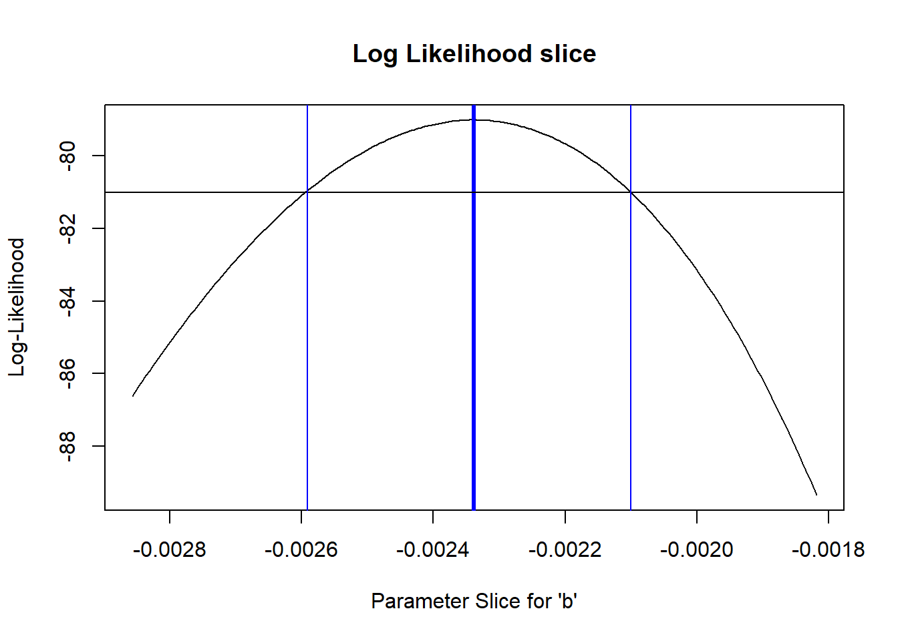
Now let’s add a contour line to indicate the 95% bivariate confidence region
# add a contour line, assuming deviances follow a chi-squared distribution
conf95 <- qchisq(0.95,2)/2 # this evaluates to around 3. Since we are varying freely across 2 dimensions, we use chisq with 2 degrees of freedom
ggplot(LLsurface,mapping =aes(x=a,y=b,z=LL)) +
geom_raster(aes(fill=LL)) +
geom_contour(breaks=seq(-100,-75,3) ,lwd=1.2) +
geom_contour(breaks=LogLik-conf95 ,lwd=2,col="black") +
scale_fill_gradient(limits=c(-125,-75)) +
labs(title = "Log Likelihood Surface with 2D Confidence Region")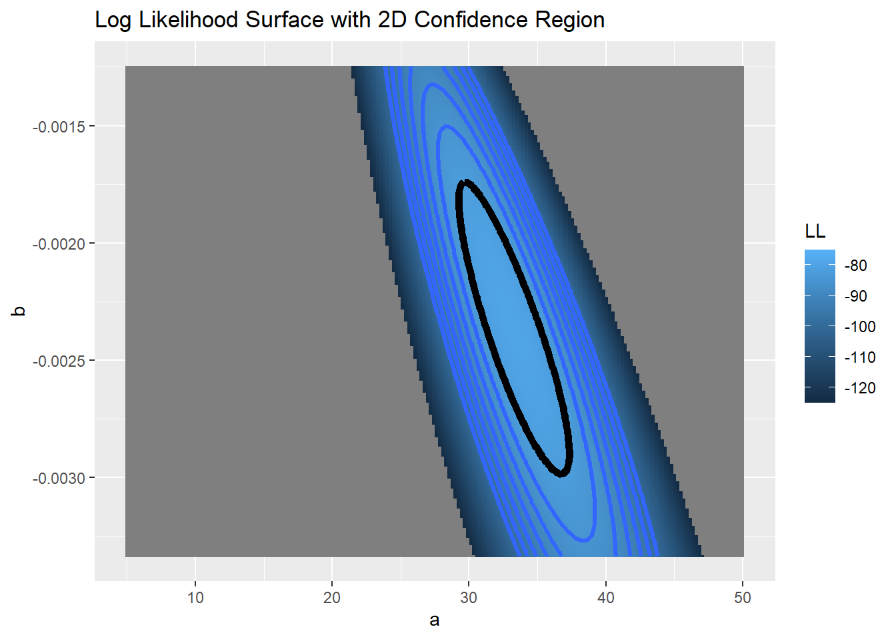
Likelihood profiles
So, what is the “profile likelihood” confidence interval for the a parameter?
By “profile likelihood” confidence interval, we mean this: we have a parameter of interest, and one or more free parameters that we also have some uncertainty about. For every value of the parameter of interest, we find the highest likelihood value across all possible values of all the other uncertain parameters (parameter of interest is a sequence of fixed points across its range, other parameter(s) are free to vary). This way we can define a likelihood surface that accounts for our uncertainty about all the other free parameters in our model.
# visualize likelihood profiles!
profile_a <- LLsurface |> group_by(a) |> summarize(LL=max(LL))
profile_b <- LLsurface |> group_by(b) |> summarize(LL=max(LL))
reasonable_a <- profile_a$a[profile_a$LL >=(LogLik-qchisq(0.95,1)/2)]
ggplot(profile_a,aes(a,LL)) + geom_path(lwd=2) +
geom_vline(xintercept = c(min(reasonable_a),max(reasonable_a) )) +
xlim(c(25,40)) + ylim(c(-110,-75))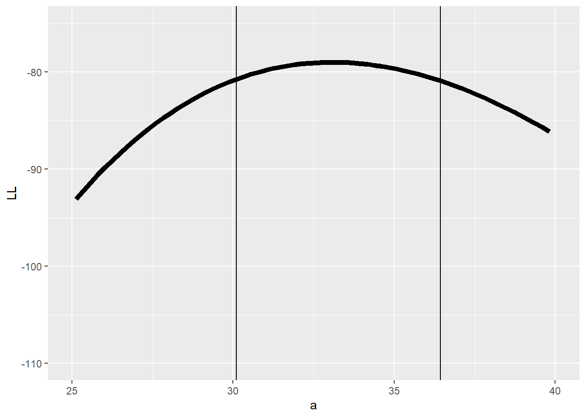
And the b parameter?
# profile for the b parameter...
reasonable_b <- profile_b$b[profile_b$LL >=(LogLik-qchisq(0.95,1)/2)]
ggplot(profile_b,aes(b,LL)) + geom_path(lwd=2) +
geom_vline(xintercept = c(min(reasonable_b),max(reasonable_b) )) 
So,what happens if we compare the profile likelihood confidence interval with the “slice” method we used earlier??
# Compare profile and slice intervals
compdf <- rbind(profile_b,data.frame(b=allvals_b,LL=slice_b))
compdf$Method <- rep(c("Profile","Slice"),each=nrow(profile_b))
ggplot(compdf,aes(x=b,y=LL,color=Method)) + geom_path(lwd=2) +
geom_vline(xintercept = c(min(reasonable_b),max(reasonable_b) ),color="darkgreen",lty=2) +
geom_vline(xintercept = reasonable_b_limits ,color="purple",lty=2) +
scale_color_manual(values=c("darkgreen","purple"))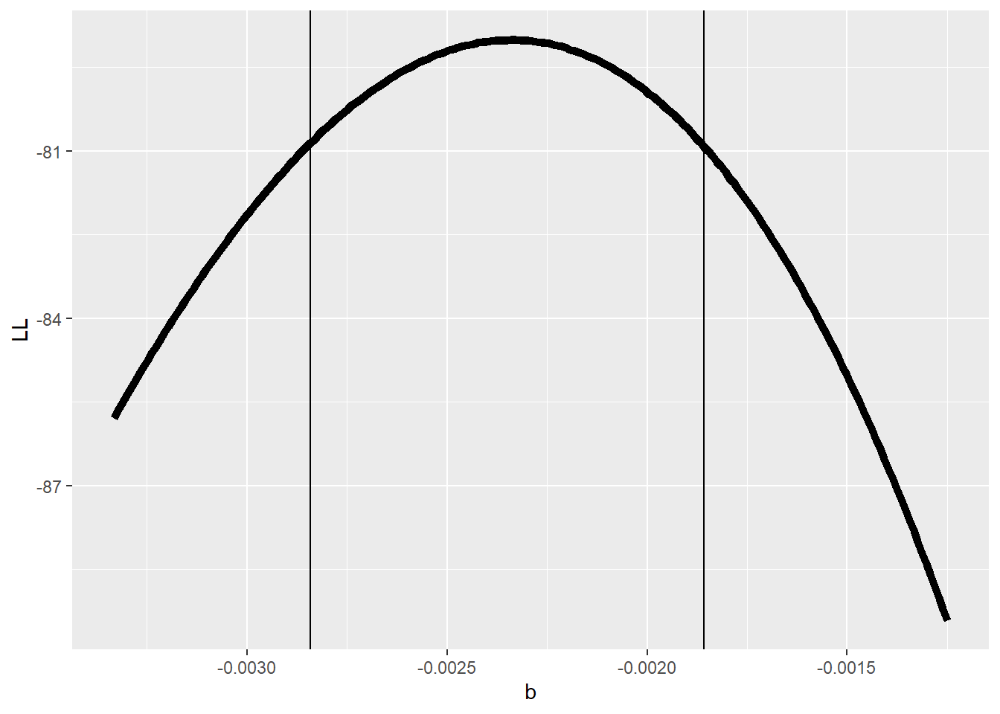
Does it make sense why there is a difference (i.e., why the profile-likelihood CI is wider than the slice CI)??
In R and other software packages you may work with, you will sometimes have the option to estimate the confidence interval using the ‘profile likelihood’ method. Now you know what that means!
The usual way to generate CIs for MLE!
Most software doesn’t use the profile likelihood method- instead, it uses a fast and usually very accurate approximation. This approximation involves evaluating the shape of the likelihood surface at the MLE using a theory that states that the MLE is asymptotically normally distributed. Don’t worry about the matrix algebra here, but this method involves using the second derivative of the log likelihood function evaluated at the MLE to estimate the standard errors of all parameters (formally, use the “Hessian” matrix!).
The theory behind this is pretty intuitive. Steeper gradients (slopes) in the likelihood surface near the maximum likelihood estimate correspond to narrower confidence intervals. The gradient of the likelihood surface at the MLE is zero by definition (when you find a maximum, you identify those points on the surface where the derivative is zero). The degree to which the gradient drops off with distance (in parameter space) from the MLE is a measure of how much better the model fits near to the MLE vs further away. The “change in the gradient” around the MLE feels a lot like a second derivative, right? It’s a change in the change of your log likelihood (with respect to tiny steps in parameter space)… The hessian matrix encapsulates the second-order partial derivatives of your log likelihood function. So hopefully it makes intuitive sense that the hessian matrix is related to computing confidence intervals in maximum likelihood estimation.
To use this method “from scratch” for custom likelihood functions in R, you can use the ‘hessian=TRUE’ argument in ‘optim’. The inverse of the hessian matrix (times -1 if you minimized the negative LL) is the variance-covariance matrix for your parameters. The diagonals of the variance covariance matrix represent the parameter covariances. Taking the square root of the variances results in standard error estimates for each of your free parameters!
## use the normal approximation to estimate confidence intervals!
varcov <- solve(-optimizedLik$hessian) # compute the variance covariance matrix for the coefficients from the hessian matrix
# approximate confidence interval as 2 standard errors from the MLE
lb = MLE - 2*sqrt(diag(varcov))
ub = MLE + 2*sqrt(diag(varcov))
cbind(MLE,lb,ub)## MLE lb ub
## a 33.076121323 29.728355028 36.423887617
## b -0.002338403 -0.002816941 -0.001859865
## sigma 2.857709801 2.030675278 3.684744325# compare with profile likelihood method for b
c(min(reasonable_b),max(reasonable_b) ) # close enough!?## [1] -0.002841290 -0.001857203Exercise 3.1
Develop a likelihood function for the following scenario: you visit three known-occupied wetland sites ten times and for each site you record the number of times a particular frog species is detected within a 5-minute period. Assuming that all sites are occupied continuously, compute the likelihood of these data: [3, 2 and 6 detections for sites 1, 2, and 3 respectively] for a given detection probability \(p\). Assume that all sites have the same (unknown) detection probability. Using this likelihood function, answer the following questions:
- What is the maximum likelihood estimate (MLE) for the p parameter?
- Using the “rule of 2”, determine the approximate 95% confidence interval for the p parameter.
###### Practice exercise: develop a likelihood function for estimating the probability of detection of a rare frog species
ncaps <- c(3,2,6) # number of times out of 10 that a frog is detected at 3 known-occupided wetland sites
#### construct a likelihood function
#### find the MLE using 'optim()' in R
#### find the approximate 95% confidence interval using the "rule of 2"The likelihood ratio test (LRT)
As we have seen, steeper gradients (slopes) in the likelihood surface near the maximum likelihood estimate correspond to narrower confidence intervals. But how can we determine the cutoffs for how much dropoff in likelihood is okay before it gets too high?
The normal approximation of the sampling distribution of the MLE gives us an entry point here (see section on hessian matrix and confidence intervals, above). Specifically, the fact that the MLE is asymptotically normally distributed gives us another tool: the likelihood ratio test (LRT)!
Definition: Likelihood Ratio
The likelihood Ratio is defined as:
\(\frac{\mathcal{L}_{r}}{\widehat{\mathcal{L}}}\)
Where \(\widehat{\mathcal{L}}\) is the maximum likelihood of the full fitted model and \(\mathcal{L} _{r}\) is the Likelihood of a model for which one or more parameters have been ‘fixed’ (usually at zero, but could be fixed at any value).
Likelihood Ratio Test
Twice the negative log likelihood ratio, \(-2*ln(\frac{\mathcal{L} _{r}}{\widehat{\mathcal{L}}})\), is an important test statistic that is asymptotically chi-squared distributed!
Sampling distribution of the deviance statistic (frequentist!)
For some reason (Wilks theorem, but never mind that) the sampling distribution of the deviance (test statistic) under the null hypothesis (H0: the reduced model is in fact the true model) is asymptotically \(\chi^2\) (“chi-squared”) distributed with r degrees of freedom, where r is the number of dimensions by which the full model has been reduced (number of parameters “fixed”- or, number of dimensions reduced in parameter space).
That is, if our full model has three free parameters and we fix the value of two of these parameters at their true values to build a reduced model, r is equal to 2.
We can use this property to estimate the statistical significance of any difference in log-likelihood (or more precisely, the deviance) between a fitted model and a reduced model with one or more parameters fixed at their true values (often, a “null” model where one or more coefficients have been set to zero).
Here is a visualization of the chi-squared distribution with 2 degrees of freedom:
# demo: likelihood ratio test -------------------------------
curve(dchisq(x,2),0,10,ylab="probability density",xlab="x", main="Chi-Squared distribution, df=2")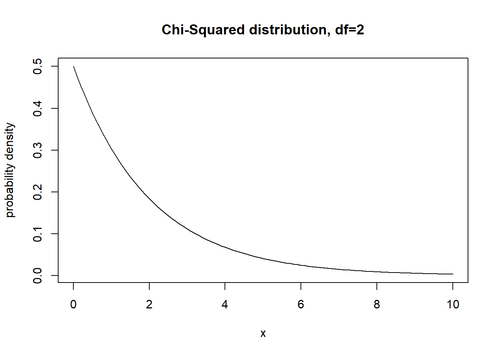
What is the 95% quantile of this distribution?
curve(dchisq(x,2),0,10,ylab="probability density",xlab="x", main="Chi-Squared distribution, df=2")
abline(v=qchisq(0.95,2),col="red",lwd=2)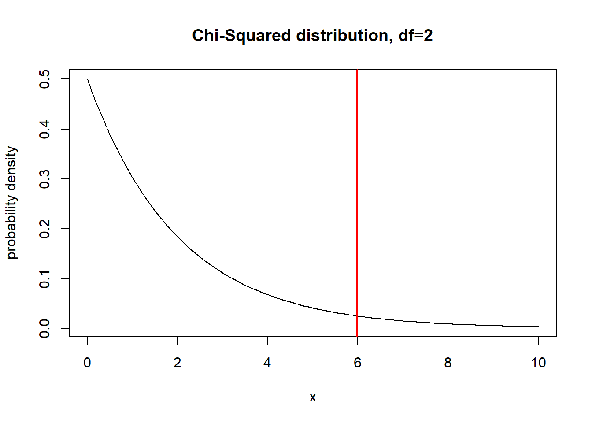
What about 1 df?
curve(dchisq(x,1),0,5,ylab="probability density",xlab="x", main="Chi-Squared distribution, df=1")
abline(v=qchisq(0.95,1),col="red",lwd=2)
Okay, so now we know that the quantity defined as \(-2*ln(\frac{\mathcal{L} _{r}}{\widehat{\mathcal{L}}})\), should be distributed according to the above probability distribution under the null hypothesis of the reduced model being true (the deviance between the full and reduced model is simply a result of random chance). How does this relate to confidence intervals?
First of all, the log-likelihood ratio is a statistic representing a kind of standardized difference between the two models.
Under a null hypothesis in which the reduced model is TRUE, the deviance statistic (2X the log-likelihood ratio) will be asymptotically Chi-squared distributed with df=r. That is, the Chi squared distribution describes the degree to which the deviance statistic may be thrown off by random sampling processes.
So, if we want to determine a range in parameter space that can plausibly contain the true parameter value, we can select the range of parameter space for which \(-2*ln(\frac{\mathcal{L} _{r}}{\widehat{\mathcal{L}}})\) is less than or equal to 3.84. (values of the statistic less than this cutoff value could plausibly be an artifact of random sampling error)
\[-2*ln(\frac{\mathcal{L}
_{r}}{\widehat{\mathcal{L}}}) \leq - 3.84\]
\[-2*[ln(\mathcal{L} _{r}) -
ln{\widehat{\mathcal{L}}})] \leq - 3.84\]
\[[ln(\mathcal{L} _{r}) -
ln{\widehat{\mathcal{L}}})] \leq 1.92\]
So, now what do you think about the ‘rule of 2’? Is it close enough??